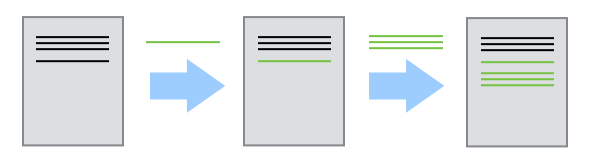
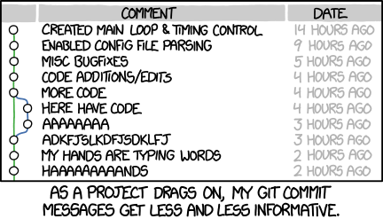
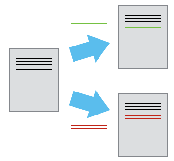
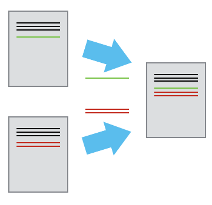
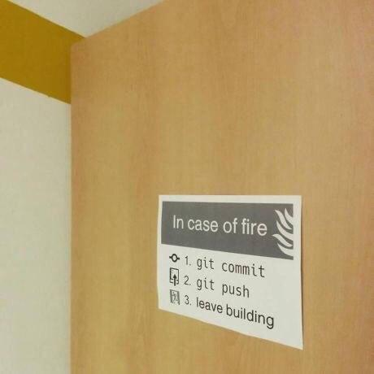

Git and GitHub for Social Science Research
Basic level
Before we start
Any knowledge already?
- How many of you are already familiar with Git/GitHub and/or other so called “version control” systems?
- How many of you have already installed Git on your computer?
Learning objetives
- Understand the basics of automated version control
- Understand the basics of
gitandGitHub - Make use of
gitandGitHubwith tools likeVS CodeandR Studio - Be introduced on how to apply version control to your research
A problem we all know
PhD Comics “FINAL.doc”
Or from a code perspective…
my_analysis.R
my_analysis_FINAL.R
my_analysis_FINAL_v2.R
my_analysis_FINAL_v2_REVIEWED.R
my_analysis_FINAL_v2_REVIEWED_Jan.R
my_analysis_THIS_ONE.RThe solution: version control
- We can record who made which changes, and when
- We can revert to previous versions
- We can identify and correct conflicts (e.g. possible overwriting)
- Nothing that is committed is ever lost (unless you try hard…)
Version control is like an unlimited ‘undo/redo’.
How version control works
Version control is like a ‘recording’ of history

Three documents. The first has two paragraphs. The second has a modified paragraph. The third has an additional paragraph
…Rewind and play changes back again!
Now you might wonder…
What about:
Microsoft Office 365?Google Drive?Dropbox?- (etc. etc.)
They do provide a “history of changes”!
Advantages
- Intentional history — every saved version has a message explaining why it changed, not just when
- Real collaboration — branching and merging let multiple people work in parallel without overwriting each other
- Works on anything — code, data, config files, and integrates with automation tools far beyond what a document editor supports
Version control with Git and GitHub
What Is Git?
Git is a version control system — a tool that tracks changes to files over time.
- Takes “snapshots” of your project at key moments
- Lets you travel back to any previous state
- Records who changed what and why
- Enables safe collaboration with others
Version control is like an unlimited ‘undo/redo’
Originally built for software — now essential for research.
Why Should Social Scientists Care?
| Challenge | Git Solution |
|---|---|
| “This chapter went sideways” | You can always track back when it deviated |
| “Which script produced this table?” | Every output is linked to exact code |
| “My collaborator broke something” | Revert to a working state instantly |
| “Reviewers want my analysis code” | Share a clean, documented history |
| “I deleted a crucial file” | Nothing is ever truly gone |
Tip
Git is a core infrastructure for reproducible research
What is GitHub
GitHub is a cloud-based platform that allows people to store, manage, and collaborate on “code” projects using Git
Core features:
- Git Hosting: It hosts Git repositories (projects), which allows developers to track changes to their code over time.
- Collaboration: Multiple developers can work on the same project simultaneously, creating “branches” to test new features without breaking the main, stable code.
- Social Coding: Users can share their public projects, follow others, and contribute to open-source software.
Tip
Read more about GitHub in GitHub doc
Git vs. GitHub
| Git | GitHub | |
|---|---|---|
| What | Local software | Cloud service |
| Does | Tracks changes locally | Hosts repos online |
| Analogy | Your wallet | Your bank |
Other platforms: GitLab, Bitbucket — same Git, different banks.
Let’s start with Git and GitHib
(and create a Git repository)
Prerequisites:
- Download and install Git from the Git website
- Create a GitHub account on GitHub
- Download and install GitHub Desktop
Steps to start
- Configure Git [Using GitHub Desktop or command line]
- Create a folder (on your laptop)
- Init a repository within the folder
- Create/add your first file
Starting a Project in GitHub Desktop
Option A — New local project:
File→New Repository- Give it a name, choose a folder, tick Initialize with README
- Click Create Repository
- Click Publish repository to push it to GitHub
Option B — Clone an existing repo:
File→Clone Repository- Browse your GitHub repos or paste a URL
- Choose a local folder → Clone
The repo now lives both on GitHub and on your computer.
Core Concepts: The Three Areas
Working Directory → Staging Area → Repository
(your files) (selected (permanent
changes) history)Think of it like writing a paper:
- Working Directory → your working draft
- Staging Area → pages you’ve selected to submit
- Repository → the final, archived version
Your First Git Commands
Configure git from the command-line, here’s how:
# Set up once on your machine
git config --global user.name "Ada Lovelace"
git config --global user.email "ada@research.ac"
# Start tracking a project
git init
# See what has changed
git status
# Stage a file
git add analysis.R
# Save a snapshot with a message
git commit -m "Add baseline regression model"The Commit: Heart of Git
A commit is a permanent snapshot of your project with:
- A unique ID (hash):
a3f92bc - Author name and email
- Timestamp
- A message you write
- The exact state of every tracked file
Tip
Commits are your research diary — make them meaningful.
The complete history of commits and metadata is a repository
Good commit messages?
What is likely to happen…

✅ "Recode income variable to quintiles for Table 3"
❌ "fixed stuff"
❌ "asdfgh"What to Track (and What Not to Track)
✅ Track these: - R, Python, Stata scripts (.R, .py, .do) - Quarto / RMarkdown files (.qmd, .Rmd) - Small, raw data files (with permission) - Documentation and codebooks
❌ Do not track these (use .gitignore): - Large datasets (use OSF, Zenodo, or Dataverse) - Sensitive / personally identifiable data - Temporary files (.Rhistory, __pycache__) - Output files that can be regenerated
Ingnoring things
- Not all files are useful
- Editor backup files
- Temporary files
- Intermediate analysis files
.gitignore
.gitignoreis a special file in your repository root- It tells
gitto ignore specified files/directories - It should be committed in your repository
- It tells
Git and Open Science
Git + GitHub enables powerful open science practices:
- Persistent links to exact code used in a paper
- Tags and releases to mark submission versions
- Zenodo integration — auto-DOI for every release
- Pre-registration companion — commit your analysis plan before data collection
- Issue tracker — structured feedback from reviewers or collaborators
Tip
A public GitHub repo is increasingly expected at submission.
Multiple contributors (branching)
- Two people work on a document
- Each makes independent changes: two versions

Three documents. On the left is the original, and on the right are two versions of this with different, and conflicting, changes
- Changes are separate from the document
Combining changes (merging)
- Several changes can be merged onto the same base document
- ‘Merging’

Three documents. On the left are the two modified documents from the previous slide. On the right is a single that incorporates both of those changes
Seriously, git push when done…

A sign: In case of fire 1. git commit, 2. git push, 3. leave building
Key Takeaways
Git gives your research a memory.
- Commit often — small, meaningful snapshots
- Write good messages — future you will thank you
- Branch freely — experiment without fear
- Push to GitHub — backup, collaboration, transparency
- Use
.gitignore— keep sensitive data out
Tip
Git gives your research a memory.
Essential resources
Happy Git and GitHub for the useR by Jenny Bryan — free online, written for researchers.
Your feedback matters!
Any question?
Simone Sacchi
Research Data Librarian, EUI Library
(Also Teams and BF-278)
EUI Library Research Data Guide - EUI Library Trainings

End of the presentation
BACKUP SLIDES

Git and GitHub for Social Science Research: basic level